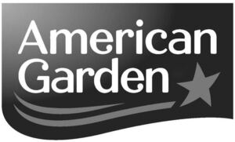

Trade Mark Journal No.2025/021 23 May 2025
WO0000001715432 (29,30)
Office of origin: United States of America
Date of International Registration:25 January 2023
Date of designation in the UK:
2 February 2025

The mark consists of of the word "American" stacked on top of the word "Garden" located within a tag design, next to the word "Garden" is a star design and underneath the word "Garden" are two parallel lines located at the lower left-hand corner within the tag design.
- Class 29
- Cheese; sausages; canned fish; canned tuna; canned vegetables; canned, cooked or otherwise processed tomatoes; coconut cream; diced tomatoes; edible oil; fruit-based filling for cakes and pies; fruit topping; fruits, namely, processed fruit in syrup; jellies and jams; lemon juice for culinary purposes; maraschino cherries; milk products excluding ice cream, ice milk and frozen yogurt; olives, preserved; peanut butter; peanut butter toppings; pickled jalapeños; pickled vegetables; pickled peppers; processed cherries; processed fruit; processed grape leaves; processed meat; processed sweet corn; processed vegetables; tomato purée; vegetable-based spreads.
- Class 30
- Horseradish; ketchup; mayonnaise; mustard; popcorn; relish; salt; sauces; spices; vinegar; barbecue sauce; bread crumbs; cake mixes; chocolate sauce; chocolate syrup; egg- and dairy-free mayonnaise; hot sauce; marinade mixes; marinades; meat tenderizers for household purposes; pancake syrup; pasta sauce; picante sauce; pizza sauce; prepared horseradish; processed popcorn; salad dressing; seasoning mixes; soy sauce; spice blends; steak sauce; table syrup; tomato sauce; Worcestershire sauce; flavor-coated popped popcorn.
AMERICAN GARDEN PRODUCTS, INC.
Representative: Squire Patton Boggs (UK) LLP, 60 London Wall London EC2M 5TQ UNITED KINGDOM